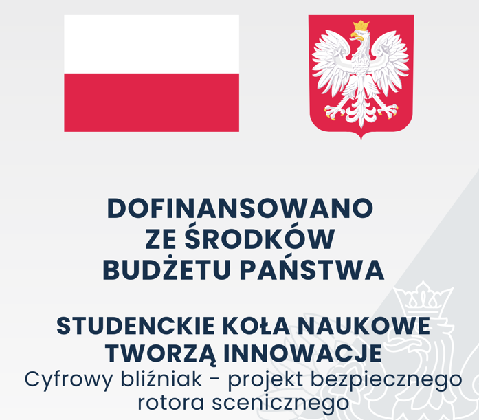
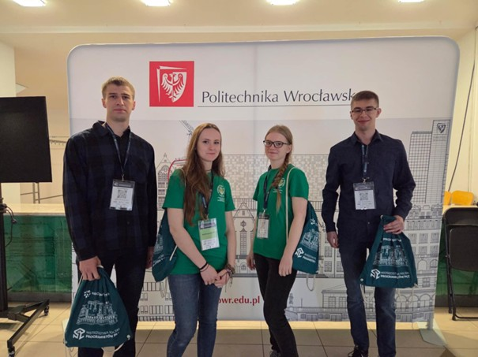
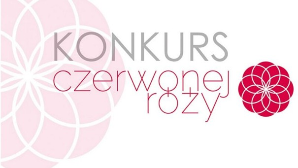
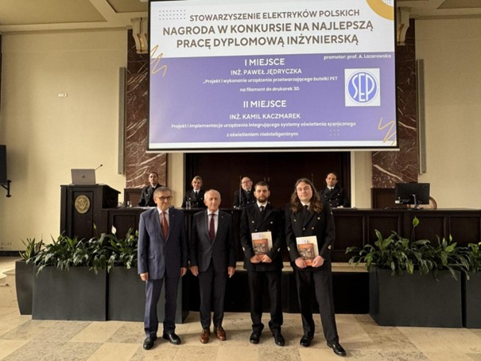
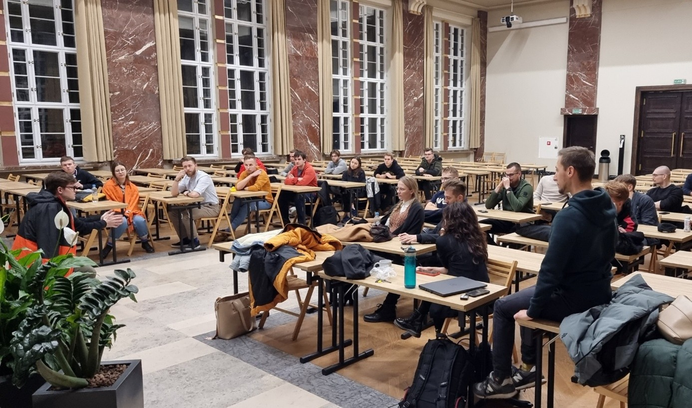

Międzynarodowy hackathon SpaceShield Hack 2025
Otrzymanie dwóch nagród specjalnych
Stalowa Wola
24–25.05.2025
Przejdź do wydarzenia

Studenckie Koła Naukowe Tworzą Innowacje
2025 - Cyfrowy bliźniak – projekt bezpiecznego rotora ścigającego
Przejdź do wydarzenia
2021 - ,,Sztuczna inteligencja w zastosowaniach przemysłowych”
Przejdź do wydarzenia

Mistrzostwa Polski programistów PLC
2025 – udział
2020 – II miejsce w kategorii Ekspert dla Dawida Trzcińskiego
2025
Przejdź do wydarzenia

Konkurs Czerwonej Róży na ,,Najlepsze koło naukowe”
2021 – reprezentowanie Uniwersytetu Morskiego w Gdyni
Przejdź do wydarzenia

Konkurs SEP na najlepsze prace inżynierskie
2025 – I nagrodę ex aequo otrzymał Paweł Jędryczka oraz II nagrodę ex aequo otrzymał Kamil Kaczmarek
Przejdź do wydarzenia
2024 – II nagrodę otrzymał Maciej Kazior
Przejdź do wydarzenia

Ogólnopolski Akcelerator Innovatorium dla zespołów
2022 – koło naukowe HMI zakwalifikowane do projektu
Przejdź do wydarzenia